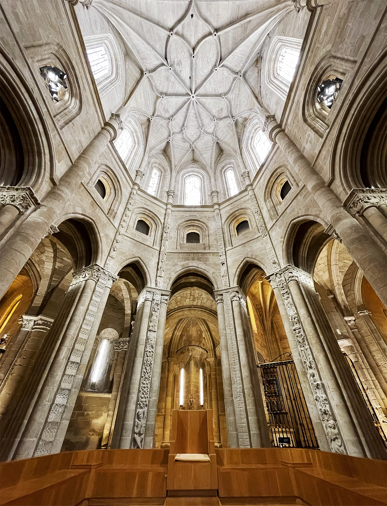
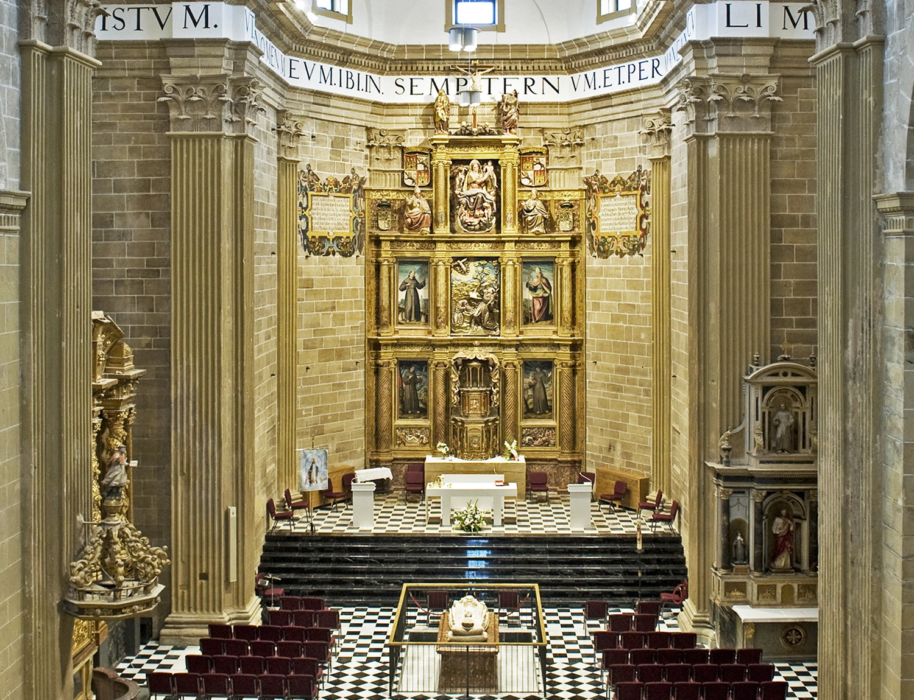
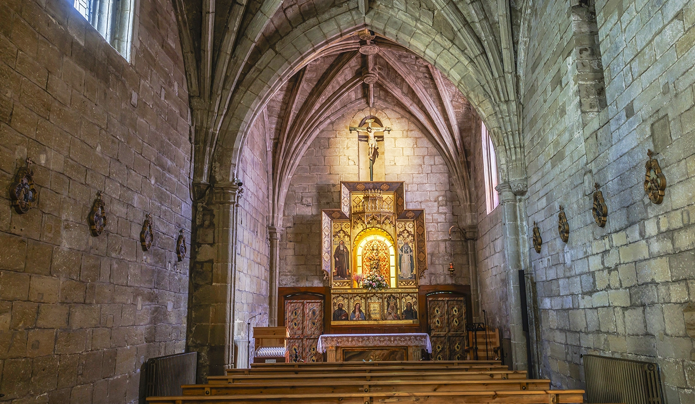
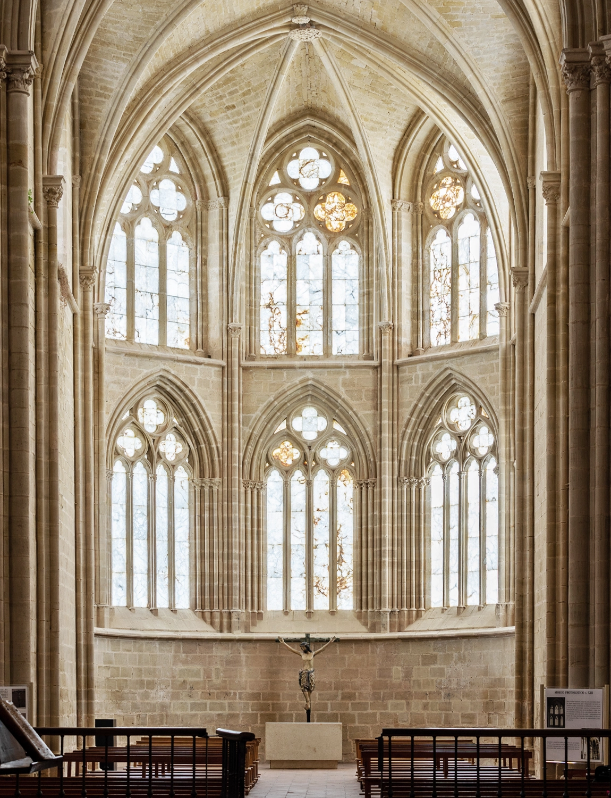

Patrimonio
Nuestros monumentos

⛪
Joya románica de La Rioja
Monumento principal
Catedral
Joya del románico riojano. Conoce el famoso gallinero vivo en su interior.
7€ adulto · Gratis <12 años
Ver más →

Mirador
Torre Exenta
Torre barroca de 70 metros de altura. Sube y contempla La Rioja desde el cielo.
4€ adulto · Gratis <12 años
Ver más →

Cultura
Convento San Francisco
Iglesia con un espacio cultural de primer orden y una magnífica Sala de Marfiles.
5€ adulto · Gratis <12 años
Ver más →

Patrimonio local
Ermita de la Plaza
Pequeña joya del patrimonio local enclavada en el corazón de la ciudad.
Visita libre
Ver más →

🏛️
Joya gótica cisterciense de La Rioja
Monasterio
Monasterio de Cañas
El "Monasterio de la Luz", un remanso de paz a pocos kilómetros del Camino.
6€ adulto · 4€ de 6 a 14 años
Ver más →